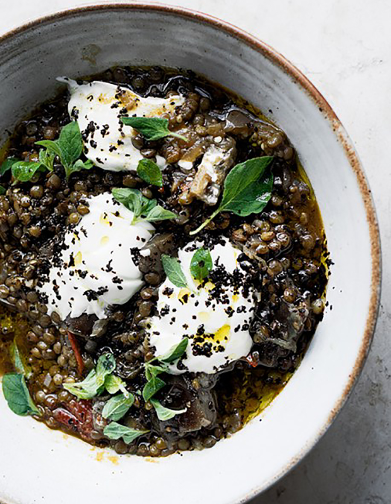

Puy lentil and aubergine stew

Serve the stew either as a hearty starter or a side,
or else as a main, served with any grain you like. The stew can be made up
to 3 days ahead and kept in the fridge – just warm through and add the , oil,
chilli flakes and oregano before serving.
INGREDIENTS
- 3 tbsp olive oil, plus a little extra to serve
- 3 garlic cloves, finely sliced
- 1 large red onion, finely chopped (160g)
- ½ tbsp picked thyme leaves
- 2 small aubergines, cut into chunks, about 5 x 2cm (420g)
- 200g cherry tomatoes
- 180g Puy lentils
- 500ml vegetable stock
- 80ml dry white wine
- 100g crème fraîche
- 1 tsp Urfa chilli flakes (or ½ tsp regular chilli flakes)
- 2 tsp picked oregano leaves
- salt and black pepper
METHOD
- Put 2 tablespoons of oil into a large, high-sided sauté pan and place
on a medium high heat. Add the garlic, onion, thyme and ¼ teaspoon of
salt and fry for 8 minutes, stirring often, until soft and golden.\
Tip into a bowl, leaving the oil behind. Set aside.
- Place the aubergines and tomatoes in a bowl and season with ¼ teaspoon
of salt and plenty of pepper. Add the remaining oil to the same pan
(don’t worry about wiping it clean) and, once very hot, add
the aubergines and tomatoes. Fry for 10 minutes, on medium high,
turning them often until the aubergine is soft and golden-brown and
the tomatoes are beginning to blacken. Return the garlic and onion
to the pan, then add the lentils, stock, wine, 450ml of water and
¾ teaspoon of salt. Bring to the boil. Lower the heat to medium and
simmer gently for about 40 minutes, until the lentils are soft but
still retain a bite.
- Serve warm, or at room temperature, with a dollop of crème fraîche,
a drizzle of oil and chilli flakes and oregano on top.